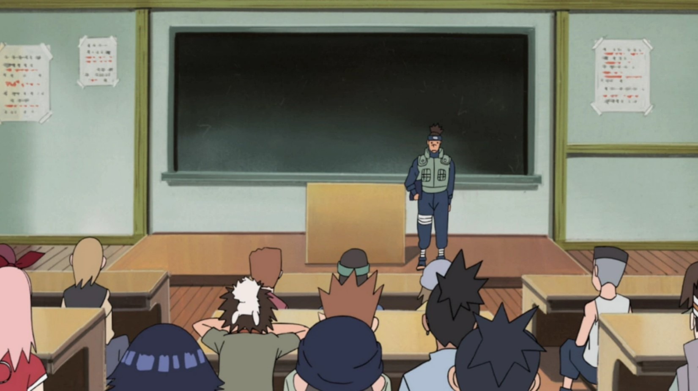
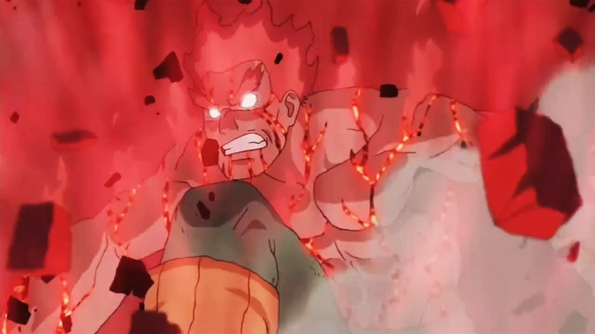
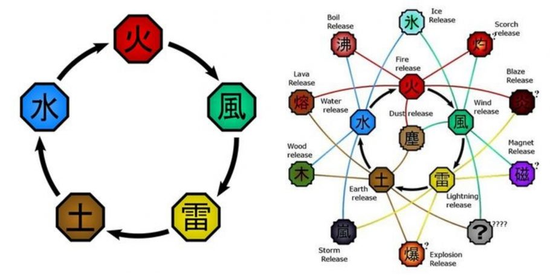
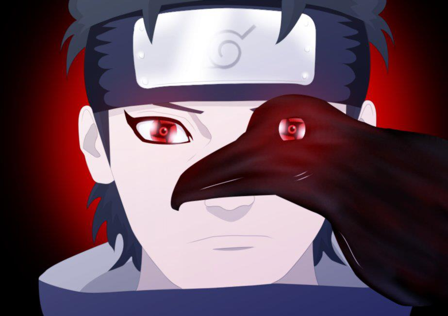

KURIKULUM
Seperti setiap sekolah pada umumnya, para murid memiliki kurikulum dasar yaitu, membaca, menulis, matematika, ilmu pengetahuan ilmiah, geografi, dsb. Pelajaran ini biasanya dibungkus dalam konteks ninja, dan faktanya, hal ini tidak dipelajari sama sekali untuk memfasilitasi instruksi baik taktik maupun strategi. Para murid belajar tentang Aturan Shinobi, bagaimana memperkuat pikiran dan tubuh mereka, dan menerima pelajaran khusus dari shinobi yang lebih berpengalaman. Mereka dihadapkan melalui cara menggunakan senjata dan alat-alat Ninja lainnya, seperti shuriken dan kunai, belajar bagaimana untuk melempar dan menggunakan benda tersebut melalui latihan sasaran, serta diberikan instruksi tentang dasar-dasar pengaturan sebuah perangkap. Murid Akademi juga diajarkan tentang teori chakra dan bagaimana cara menggunakannya dengan segel tangan.
Kelas Shinobi dapat dibagi ke dalam beberapa tingkat dasar :
Taijutsu
Kelas Taijutsu menjadi setara dengan pelajaran olahraga Ninja Akademi. Di kelas taijutsu, siswa terlibat dalam aktivitas fisik untuk membantu melatih tubuh mereka dan mengembangkan stamina mereka. Perselisihan biasa terjadi.
Ninjutsu
Kelas Ninjutsu menyediakan sebagian besar apa yang ninja pelajari di Akademi. Siswa diajarkan tentang chakra, bagaimana untuk memanipulasi dan menggunakan segel tangan, dan bagaimana menggunakan teknik seperti Teknik Transformasi dan Teknik Klon.
Genjutsu
Kelas Genjutsu kurang difokuskan pada cara membuat ilusi dan lebih pada cara kerjanya. Siswa diajarkan untuk menentukan apakah mereka terjebak dalam genjutsu, dan kemudian bagaimana untuk melepaskan diri dari itu.